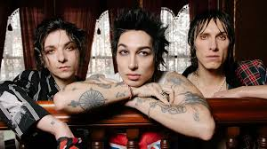
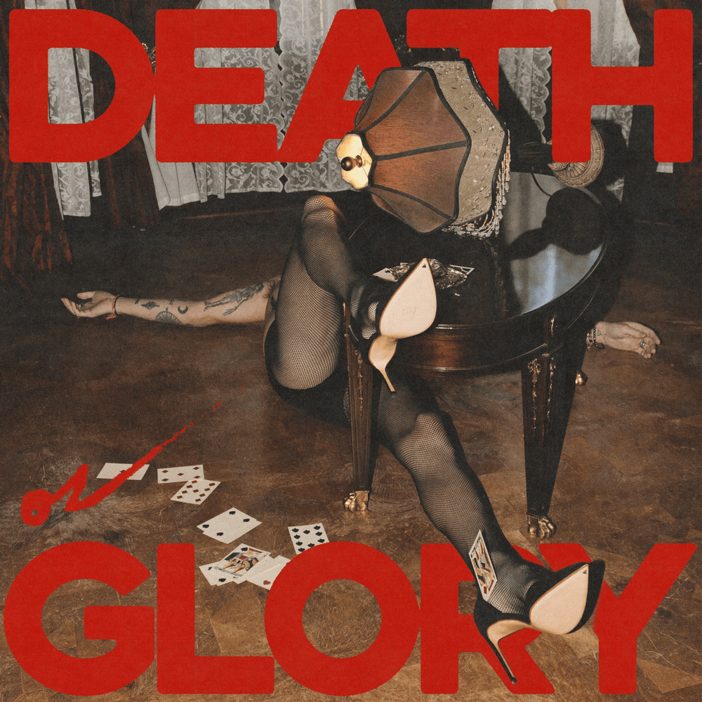

Palaye Royale es una banda de rock estadounidense-canadiense originalmente formada en Las Vegas, y actualmente con base en Los Ángeles, por los hermanos Remington Leith, Sebastian Danzig y Emerson Barrett. Aunque su apellido real es Kropp, cada uno de ellos utiliza como nombre artístico su segundo nombre de pila. Los hermanos formaron la banda en 2008 bajo el nombre de Kropp Circle, para después cambiarlo por Palaye Royale en el verano de 2011. Su nombre es el mismo que el de la sala de baile Palais Royale de Toronto, donde sus abuelos se conocieron en los años 60. Su sencillo "Get Higher" alcanzó la posición #27 en el Billboard Modern Rock Charts y fueron la primera banda sin discográfica que ganó los premios MTV Musical March Madness, superando a artistas como Linkin Park. Su último álbum de estudio es Fever Dream. En el año 2021 estrenaron 3 nuevos sencillos "No Love In LA" , "Punching Bag" y "Paranoid".
Palaye Royale ha anunciado su próximo álbum titulado "Death Or Glory", que será la continuación de su cuarto LP "Fever Dream" lanzado en 2022. El disco está programado para ser lanzado el 30 de agosto a través del sello Sumerian Records.
Según la banda, el álbum representa: "Esos segundos de incertidumbre mientras uno cae al suelo, preguntándose si volará o impactará contra el suelo. Es donde el caos se encuentra con la armonía y donde nos encontramos luchando entre el ego y la autodestrucción, el éxito y la desesperación, y por último, entre la muerte o la gloria".
